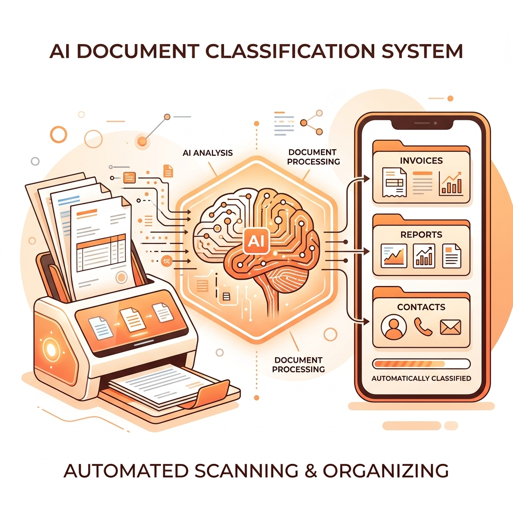
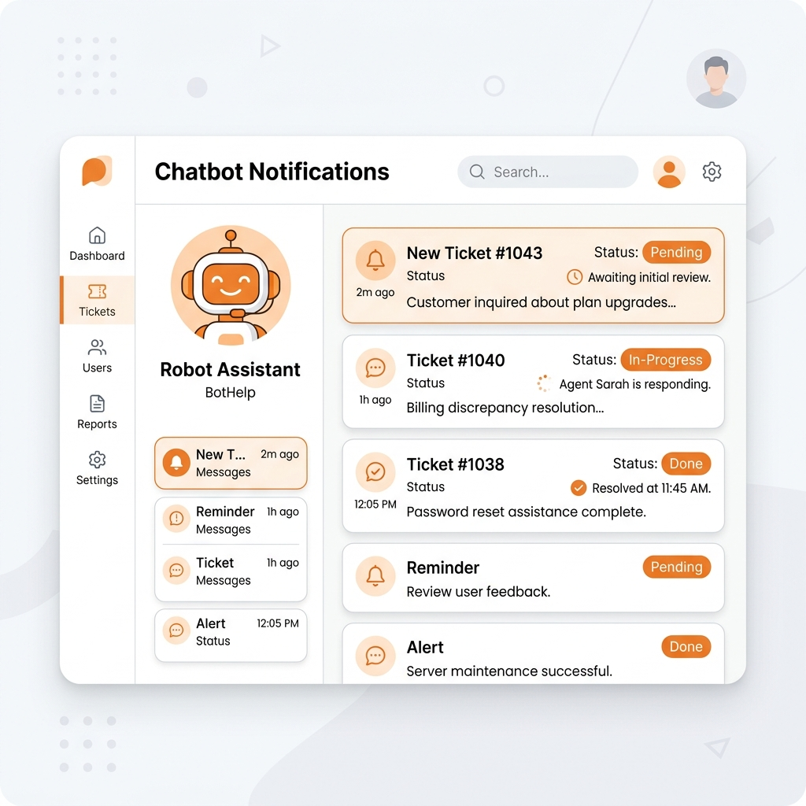
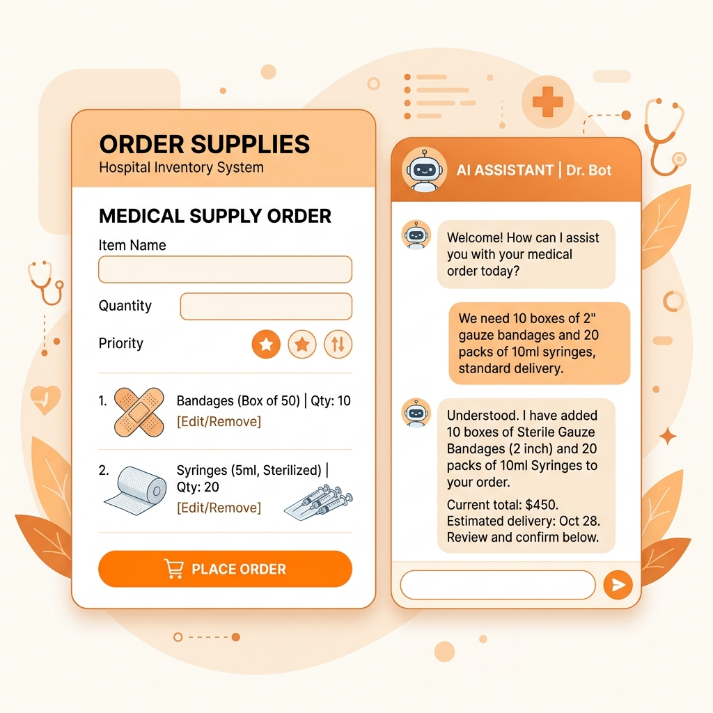
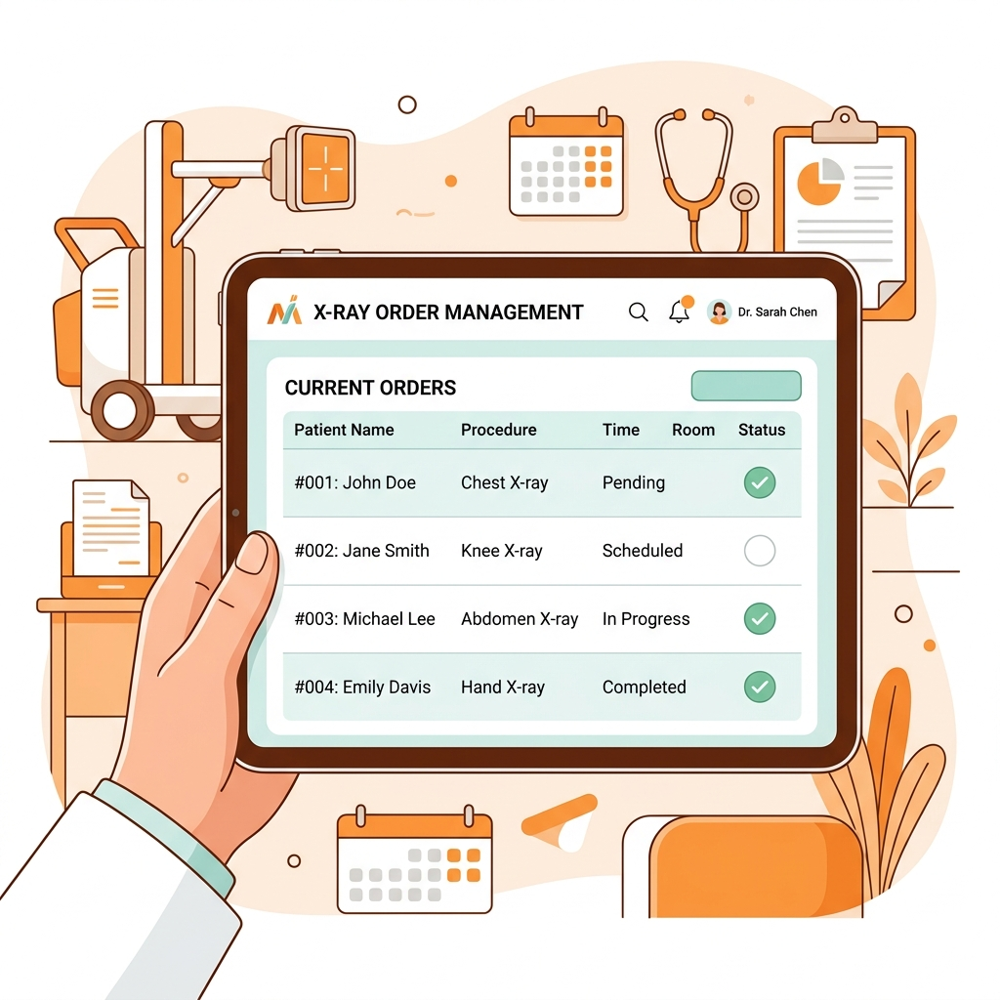
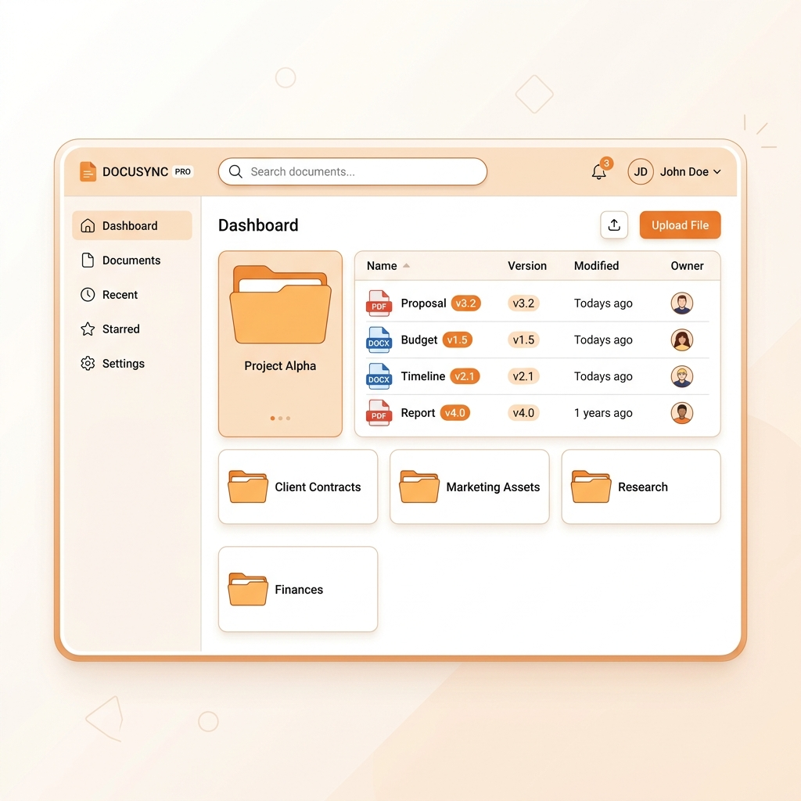

Tukusi AIの力を活かし、現場の業務を自動化しました

FAX・スキャンで届いた文書を自動で選別し、Tukusi APIを利用してGoogle Chatに通知、さらに電子カルテへの登録までを一気通貫で行うシステムです。
課題：紹介状、検査結果、訪問看護報告書など、毎日大量のFAX・スキャン文書が届きます。それぞれの内容を確認し、どの患者のものか特定し、電子カルテに手動で登録する作業は膨大でした。登録漏れや患者の取り違えリスクも常にありました。
解決：受信した文書をOhiscanGOがAI（Vertex AI / Gemini）で自動解析し、文書の種類を判別。患者名・生年月日を抽出して電子カルテの患者と自動マッチング。Tukusi APIを通じてGoogle Chatへ選別結果を通知し、マッチした患者のカルテに文書を自動登録します。
効果：1日数十件の文書登録作業が完全自動化。登録漏れ・取り違えリスクも大幅に低減しました。

課題：患者対応に関する確認依頼や問い合わせは電話やメールでやりとりしていましたが、「誰が対応したか」「どこまで進んだか」が追えず、対応漏れが発生していました。対応結果を電子カルテに記録する作業も手動でした。
解決：問い合わせが発生すると自動でGoogle Chatに通知するBOTを構築。Chat上でステータス管理（未対応/対応中/完了）やコメント記録ができ、対応結果はTukusi APIを利用して電子カルテに自動登録されます。
効果：対応漏れがゼロに。対応履歴がカルテにも残り、チーム全体で状況を共有できるようになりました。

課題：医療材料の発注は、各部署からの依頼を取りまとめ、手動で発注書を作成していました。発注した材料の情報を電子カルテに記録する作業も手間がかかっていました。
解決：材料の申請をフォームから行い、AIが過去の発注履歴をもとに自動で回答する発注管理システムを構築。Tukusi APIを利用して電子カルテへの自動登録とGoogle Chatへの通知を行います。PDF生成にも対応しています。
効果：発注業務の効率が大幅に向上。カルテへの記録も自動化され、二重入力の手間がなくなりました。

課題：訪問診療でのレントゲン撮影依頼は紙ベースで管理しており、「誰がいつ依頼した」「撮影は完了したか」の追跡が難しく、依頼漏れが発生していました。撮影結果を電子カルテに登録する作業も手動でした。
解決：レントゲンのオーダー作成から撮影完了までをシステムで一元管理。Tukusi APIを利用して撮影結果の電子カルテへの自動登録とGoogle Chatへの通知を行います。月次集計レポートにも対応しています。
効果：依頼から完了まですべて追跡可能に。カルテ登録も自動化され、紙の依頼書がなくなりました。

課題：往診先で患者様から各種証明書（診断書、身体障害者診断書、年金関連書類など）の作成依頼を受けた際、紙のメモや口頭で事務に伝えており、「誰がいつ何を頼んだか」の管理が煩雑でした。依頼漏れや確認の手間も発生していました。
解決：担当の看護師がその場でスマホから書類の作成依頼を登録できるWebアプリを構築。登録と同時にTukusi APIを利用して電子カルテに自動記録され、Google Chatへの通知も行われます。依頼のステータス管理や5クリニックへの自動同期にも対応しています。
効果：依頼漏れがなくなり、受付から完了まですべて追跡可能に。カルテへの記録も自動化され、事務スタッフの負担が大幅に軽減しました。